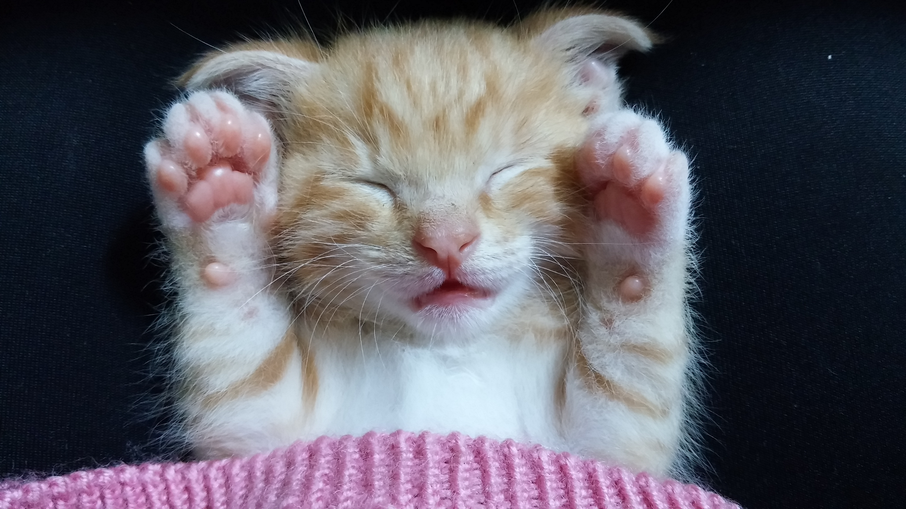
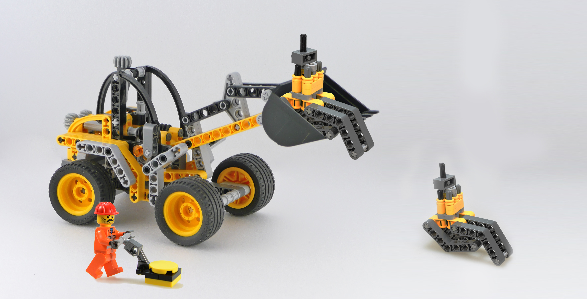

5 things you should do to rock your next UX Researcher job interview
Posted on April 1, 2018 by Kerem Ozcan
If you landed on this page, chances are you an aspiring User Experience Researcher, anxious about an upcoming job interview. So anxious that you had to dig for some tips on the internet as a last resort…
If that is the case, you are exactly in the right place. If not, here’s a cute kitten so you don’t feel like you wasted a click.
 Source: https://pxhere.com/en/photo/1039459So, you are still here? Well then here’s some background before I start my rant: Within the past 5 years I had over a dozen job interviews for UX research positions with a number of crème de la crème tech companies. Some went well and, others went sour. Reflecting on my past experience, here are a few things that I think led me to work as a UX researcher in companies like Facebook, Philips and Autodesk.
 Source: https://pxhere.com/en/photo/1263477You will likely be asked to design a study on the spot at one point – Start by building context.
Most job interviews will include a hypothetical scenario where you need research to understand what is going on. Let’s take the following example:
“Our app has recently added a share button, but users don’t seem to engage with it. How would you address this issue with a UX study?”
The worst answer is a 5-second awkward silence followed by an answer like “I would conduct a survey.” Interviewers don’t expect you to blurt out the perfect research method in a blink for any given UX issue. They want to understand how you think in these situations.
So instead of answering the question right away start by building a common context with your interviewer. You can start by voicing your assumptions: “I am assuming that we already have log data that shows users haven’t been engaging with the button, even though they were sharing the screenshots of our app using a messaging app. I am also assuming that I have 6 weeks to finish the study.” Alternatively, you can just ask your interviewer about the context. This will help you and the interviewer to have a common understanding of the problem and it may even buy you some time to think about how to answer the question!
Walk your interviewer through your thinking when talkin about tools to use
There is an abundance of UX research methods, but you do not just randomly pick any do you? Explain how you think about the problem and why you chose one method among the others. For instance, a an example where you walk your interviewer through your thinking could go like this: “We try to understand why people do not use the share button even though they share screenshots of the app with their friends. We could do interviews and ask users. However, in this case, I think we need instant, contextual feedback. Interviews are not good for that, because they are not in situ and prone to memory biases. Therefore, I would suggest doing a single question survey that pops-up when they take screenshots.”
Now there’s a whole art and science behind how to make these decisions. I cannot and will not go into that in this article – but here are a few pointers: When to Use Which User-Experience Research Methods by Christian Rohrer and Measuring the User Experience by Tullis and Albert.
 Source: https://pxhere.com/en/photo/780566
Source: https://pxhere.com/en/photo/780566
Actionable insights over interesting findings.
If you have a background in the academia, this is likely the most challenging one. In the world of industry, there is no such thing as “research for research’s sake.” Every finding you come up with should have implications for how the products and features are designed. The most important findings of your study are not the most interesting ones but the ones designers and engineers in your team can act on.
Even if you had never worked in the industry before, think about how your past research had implications on design – or how it could, if you haven’t thought about it at the time. If already had industry experience, great! Think about how things would have been different, had it not been for your amazing study!
Prepare about what past research experience you will talk about and how you will talk about it.
In my very first UX research job interview, I remember mentioning one research study that I have done during my masters 5 years ago and the whole interview revolved around that very study. It was not even the study that I was most proud of. The good news is that even though you cannot pick your questions, you can pick your answers. In other words, you can decide which past research projects you will talk about and how you will talk about them if you prepare in advance.
At any UX job interview, you will have time to talk about at most 5 past research projects. Even if you had done more – Pick 5. Think about all these projects from A to Z beforehand. What was the problem? How did you recruit people? What were the methods? Who did you collaborate with?... Basically, think about EVERYTHING that happened during these projects beforehand. That way when you get asked questions like “Tell me about a time where you had a disagreement with a colleague,” or “Tell me about a project where you had to change your methods when your first approach didn’t work?” you will not have to sift through everything you have done since your freshman year in college and you will not have to do active thinking on the spot – which means less ‘err’s and ‘umm’s.
Also try to answer different questions with different projects whenever possible, so that you communicate depth and breadth!
Research your Interviewers, ask relevant questions.
There is no shame in researching your interviewers in general. However, there is absolutely no shame in researching your interviewers if you are applying for a research position! This will set you apart in the end when the interviewers asks, “Do you have any questions?” Don’t just ask them any question – but something that you were genuinely curious about when doing your research on them. Say, if your interviewer was an designer by training such as yourself, you can ask them about the their transition to UX research. If you found they did research overseas, you can ask them whether international research is common in the institution. Basically, make your question personal and relevant. Don’t refrain from mentioning you did research on them. If you tell them you ask this question based on a blog they have written a couple years ago, I assure you that they will more likely to be pleased then creeped.